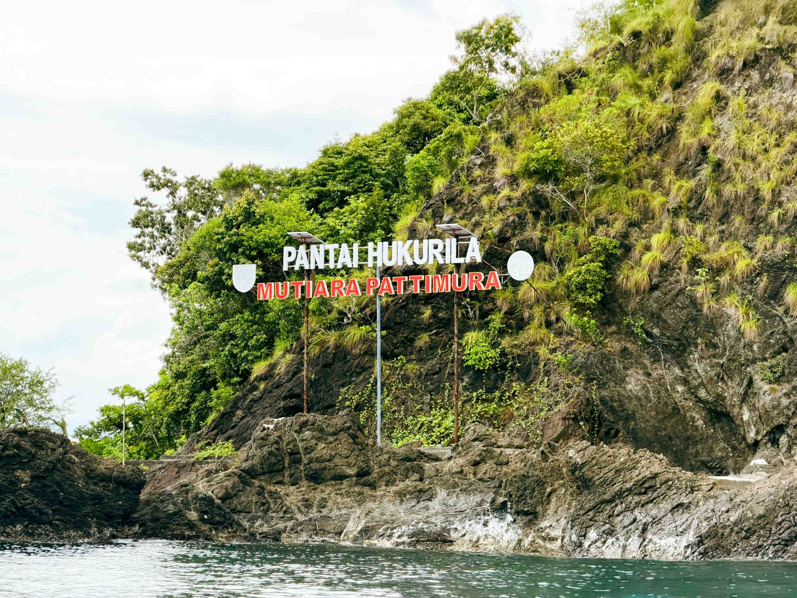

🤿
Diving & Snorkeling
Jelajahi terumbu karang dan lihat beragam ikan kecil di perairan Hukurila yang menawan.
SURGA TERSEMBUNYI DI AMBON
Air sebening kristal, karang yang memesona, dan petualangan bawah laut di selatan Pulau Ambon.
Jelajahi Pantai ↓
KENALI DESTINASINYA
Pantai Hukurila berada di Desa Hukurila, Kecamatan Leitimur Selatan, Kota Ambon, Maluku. Pantai ini menghadap langsung ke Laut Banda dan dikenal dengan keindahan bawah lautnya.
Pantai ini memiliki pasir putih kehitaman, batu karang yang unik, serta air laut kehijauan yang tampak jernih saat terkena sinar matahari. Terumbu karangnya menjadi salah satu daya tarik bagi pencinta wisata bahari.
Waktu terbaik: datang pagi hari untuk menikmati suasana yang tenang dan pemandangan matahari terbit.
PENGALAMAN PILIHAN
Nikmati pesona pantai dari pesisir hingga dunia bawah lautnya.
Jelajahi terumbu karang dan lihat beragam ikan kecil di perairan Hukurila yang menawan.
Gua Hukurila memiliki formasi batu besar dan celah yang menjadi daya tarik bagi penyelam berpengalaman.
Karena menghadap ke timur, pantai ini menjadi tempat menarik untuk menikmati suasana pagi.
Abadikan pemandangan tebing hijau, bebatuan pesisir, dan warna laut yang indah.
Catatan: Gua bawah laut dan area menyelam memiliki risiko. Gunakan pemandu profesional, peralatan yang sesuai, dan ikuti kondisi cuaca serta arus setempat.
YANG BISA DINIKMATI
Beberapa pilihan yang dapat membantu perjalananmu lebih nyaman.
Pilihan menginap di sekitar kawasan, sesuai ketersediaan.
Nikmati makanan dan minuman dari penyedia setempat.
Aktivitas menyelam untuk menikmati pemandangan bawah laut.
Melihat kehidupan laut dari permukaan air dengan perlengkapan yang tepat.
Ketersediaan fasilitas, penyewaan alat, dan layanan pemandu dapat berubah. Pastikan bertanya kepada pengelola atau warga setempat sebelum berkunjung.
SAATNYA BERTUALANG
Siapkan kamera, jaga kebersihan pantai, dan hormati alam serta masyarakat setempat.